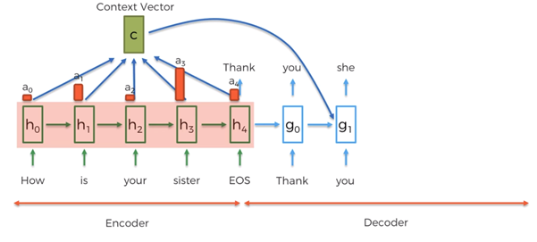

Surgery on an Attentional Neural Network
Customising an LSTM model to better understand Attention in Sequence to Sequence text prediction

Explaining the concept of ‘Attention’ in Natural Language Processing Models by removing part of the memory function of a Recurrent Neural Network Encoder-Decoder
Why this project?
- Understand ‘Attention’, in Natural Language Processing algorithms.
- Advancing explainability of A.I.
- Understand the flexible nature of Neural Networks
Table of Contents
- Why this project?
- Normal use of Attention
- Concept of Attention
- Recap on RNNs
- Combining RNNs with Attn.
- Purpose of project
- Project Specs, Setup & modelling process
- 3 Model Topologies
- LSTM w Attn.
- BiLSTM w. Attn.
- Forgetful Encoder LSTM w. Attn.
- Conclusion
Deep learning has such a large and growing set of algorithms within it. The jargon can get confusing - some are referenced in this post…
- Recurrent Neural Network is a type of Neural Network
- a Long Short Term Memory (LSTM) Neural Network is a type of Recurrent Neural Network (RNN)
- an Encoder-Decoder is a configuration of a LSTM-RNN (also of other RNNs, and non-Recurrent Neural Networks)
Normal use of Attention
‘Attention’ is a mechanism delveoped in 2015 to give Recurrent Neural Networks more power to learn longer sequences. It’s particularly powerful for AI driven text prediction tasks, like captions on videos, or chatbots.
While an LSTM-RNN was designed for longer sequences, it still has it’s limits for the kind of length found in most of the sentences we use everyday.
Concept of Attention
When we move our eyes along a sentence, we’re able to read each word even at a small font size - though we have to look directly at that word. However, walking down the street, we’ll know what a billboard in our peripheral vision says.
When we bring our attention to something, we can see greater detail. When there is greater detail, more information can be packed in for us to interpret. Likewise, a map can express more when it’s scale is large, and we use a magnifying glass to focus our attention on it’s sections.
Recap on RNNs
RNN’s (Recurrent Neural Networks) are set up to accept data that is meant to be looked at in a particular sequence;
- A song is a collection of notes only if the notes are in a particular order.
- A sentence makes no sense when you slightly the change of order words.
An RNN can take advantage of additional information intrinsict to the input - their order. The new piece of information is a relationship between sequential inputs.
An example. If a sequence of inputs is: 4, 3, 2 a machine that didn’t pay attention to their sequence would treat 2, 4, 3 the same - so predicting an output of “1” wouldn’t be possible.
Only a machine that stores memory over the sequence can pay attention to the relationship between inputs in the sequence. It would see the relationship between 4, 3 and 3, 2 so could use the last input 2 in combination with the relationship information: -1, to predict an output 1, and it would work for any sequence of any length. The RNN is fed additional information: the order of inputs - so it makes use of this in prediction.
So, a prediction machine has parameters for inputs, but a RNN also has parameters for the temporal relationship based on the order the inputs are presented in.
$$\mathrm{Relationship}\ \mathrm{information}=\mathit{\mathbf{f}}\left(\mathrm{prior}\ \mathrm{relationship},\mathrm{input}\ \mathrm{at}\ \mathrm{step}\ t\right)$$ $$\mathrm{Next}\ \mathrm{Output}=\mathit{\mathbf{f}}\left(\mathrm{relationship}\ \mathrm{information},\mathrm{input}\ \mathrm{at}\ \mathrm{step}\ t\right)$$ In the example of sentence prediction;
$$\mathrm{Next}\ \mathrm{word}=\mathit{\mathbf{f}}\left(\mathrm{meaning}\ \mathrm{of}\ \mathrm{recent}\ \mathrm{words},\mathrm{last}\ \mathrm{word}\right)$$
In the image below, “Hidden State” can be thought of as the relationship information. It evolves as it gets passed through the sequence.

Typically in deep learning sentence prediction, an Encoder-Decoder RNN setup is used. The first half of the Neural Network, the Encoder, converts the input sequence into data points in a multi-dimensional space (Hidden State). The second half, the Decoder, predicts what multi-dimensional data point should come after the encoded sequence. The prediction is then converted from multi-dimensional datapoint back to something similar as the input, i.e. from Hidden States to words.
Combining RNNs with Attn.
For many setups in NLP, the RNN Encoder is converting a sequence of datapoints, into a single datapoint. We can call this ‘compression’ of the sequence.
It’s often helpful to understand a concept from differing analogies. To understand compressed sequence in the context of RNNs using the map & magnifying glass example; imagine putting your eye on the surface of the map, and looking along its surface. You’d see in great detail the part of the map close to your eye, but less so further away. This is an analogy for how RNN Encoders compress a sequence, before passing it to the Decoder, to predict the resulting sequence. Greater detail can be achieved at recent time steps, and less detail at older steps in the compressed sequence.

Normally, the Decoder is passed only the compressed encoded sequence;
- Encoder compresses the input sequence at it’s final step, and passes it to the Decoder for its first prediction step only. The Decoder takes over for all output steps after that.
In a Seq2Seq RNN model with Attention, the Decoder is passed information about the input sequence in a second way;
- The Attention mechanism takes the entire un-compressed encoded sequence, at each step of the length of input sequence. It then uses this, in conjunction with the Decoders' most recent prediction to feed the Decoder at every step of the output sequence prediction.
Here the Decoder is initialised with the final ‘state’ of the Encoder, but then for each Decoder step, the attention mechanism is an input also (which comes from each individual step of the encoded sequence)
Below, we can see the Decoder pays most attention to “sister”, when trying to predict the word “she”;

Purpose of project
This project will help explain how the attention mechanism works, and also shine a light on the nature of hidden state / compressed sequences in RNNs.
I’ll create 3 RNNs & visualise where attention is going.
What we’ll see is the way a Neural network can learn a dataset in many different ways. We’ll get a sense for how an Encoder tries to represent information so it is most clear and most useful for the Decoder to predict output.
Think of this as very simple and clear lines and marks on a topographic map - they try to be as helpful to the reader, with smallest amount of marks and colours.
Project Specs, Setup & modelling process
I’ve been always been interested in time-series data, so decided to build my own LSTM RNN from the math and theory I could find in the literature. From there, I added an Attention mechanism.
The advantage to writing your own, is you can manipulate its architecture to get a deeper understanding. In this project, I will perform a ‘lobotomy’ on the long term memory part of a Neural Network to see how Attention allows the Network to adapt!
I’ll create 3 topologies of neural networks, where one of them has been manipulated so that the Encoder is left with the memory of a goldfish, while the Decoder & attention are left to try and complete the task of converting Numbers to Roman Numerals.
Converting Numbers to Roman Numerals in the baseline model will be structured as below;

3 Model Topologies
LSTM w. Attn.
This model will be the baseline. It’s the simplest LSTM structure to successfully ustilise Attention.
BiLSTM w. Attn.
In a Bi-directional LSTM, the input sequence is fed into the Encoder twice - once in its usual start to finish order, as well as in reverse;
This means the ‘compressed’ sequence going into the Decoder has been compressed with both first & last step in the sequence being most recent in the compression. When the attention mechanism takes each step of the uncompressed encoded sequence, it’s seeing a blend of the sequence forward and backward.
Forgetful Encoder LSTM w. Attn.
Normally, the Encoder takes data in a sequence. The RNN can ‘remember’ past steps through the sequence by evolving knowledge of the sequence along the way. At the first step, it knows only the first input. At 2nd it’s a compressed version of 1st step with 2nd input added to it. At the last step, its a compression of all steps in their sequence. (This is not the same as the 2nd encoded step being knowledge of only step 2’s input.)
This model is the same as the 1st model, except between input sequence steps, no information is passed along - removing the “Recurrent” aspect to the Encoder.
The attention mechanism will see all of the encoded steps, but they will be completely independent of prior steps. This means the Decoder will not have a compressed & ordered input sequence to work with. But, will still know the positional nature of input steps.
See footnote for technically how this is done. 1
LSTM w Attn.
Attn Scores
For each roman numeral prediction step, the Decoder looks at the prior output step (rows) and the entire encoded input sequence (all columns). Each row of blue and white squares shows where the network is placing importance to make a prediction for that output step. This example is very counter-intuitive to how we pay attention to each number when converting numbers to roman numerals;
Across all examples, the attention mechanism only pays attention to the final step of the input. This isn’t the final step alone, it’s the compression of all steps leading up to the final step.
So, the attention mechanism isn’t really necessary here - a Decoder without attention already takes the final input step!
The problem is too simple to necessitate the Attention mechanism.
Visualising encoded input sequence
To better understand how more valuable information is present at the final step, we can plot the encoded multi-dimensional values of the input over sequential time steps. (plotted on only 2 dimensions using PCA)
There are two pieces of information at each timestep - the LSTM Hidden State and Memory. Remember, each encoded step is storing a compression of all steps leading up to it;
As we go through the encoded steps, the spread of data points is increasing in variety (spreading apart). This growing diversity, gives the Decoder more to work with in accurately predicting between one roman numeral and another. Step 3 & 4 are not too dissimilar because the “{eos}” tag doesnt add any new information.
BiLSTM w. Attn.
Attn Scores
In the bidirectional LSTM, the Encoder takes a sequence in both directions as input. In the regular Encoder, the attention mechanism focused on the last step in the sequence, where the {eos} tag occurs - because this step stored all information from the entire sequence.
In the bidirectional LSTM, the information from the entire sequence occurs at both the first position and the last position. So, attention finds the most useful information to be at the half way point;
The prediction for 374 is quite intuitive. Attention went to 3 when predicting C,C,C. Because the input sequence was flipped (Bidirectional LSTM), the first position was referenced when predicting the final output: end of string {eos}. The model knew that for this input, finishing with a 4 signals no more roman numerals needed to translate from numeric.
There is a bias of the attention to the first step rather than the 3rd. This is because 2 digit numbers are 10% of observations which have no useful information in the final sequence spot.
Forgetful Encoder LSTM w. Attn.
Attn Scores
Now, the Encoder’s outputs are a function of only the input of that step, and not a memory of steps leading up to it. Instead of the attention mechanism obtaining all information about the input sequence from the final compressed state, it must read from each step of the input sequence, so the Decoder can predict the output.
Without the Encoder passing information along the sequence, attention must be placed on all parts of the sequence to give the Decoder the best chance at predicting outputs.
This result looks tricky to make sense of but we can try for the 4 0 3 {eos} example:
- in predicting
C, it’s focused on the first and a little on the second & third digit: only a 3 digit number can start with aCif4is in the first position. - because the Decoder predicts as well as creates knowledge to pass on, the
0indicates to predict aDmakingCD = 400, but aDwith few roman numerals afterwards (only the last digit3to translate). - for the rest of the prediction sequence
I,I,I, attention has gone to the final digit3as expected.
Conclusion
Attention in our human lives, and in machine translation, allows thinking to be done with a lot more efficiency. Giving context helps to understand a datapoint, whether its predicting that a ‘cat’ is in an area of an image, or understanding a spoken sentence because of the broader conversation it’s in. (see here for a deeper understanding of this very generalisable concept)
We’ve seen here how Neural networks are incredibly powerful due to their flexibility. I was able to customise how the LSTM was configured because I wrote the algorithms - and through this, learnt the nature of Neural networks for NLP from first principles.
This article is about concepts, so I’ve left technical aspects out. Please feel free to contact me if you’d like specifics.
-
Altering LSTM to forget. ↩︎